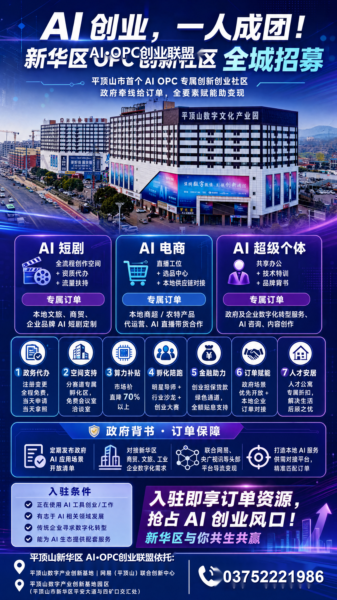
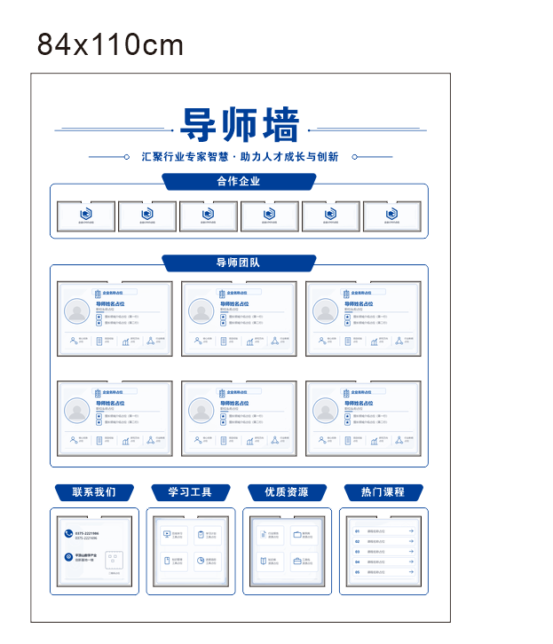

普通学习者的AI实践入口
把AI课、工具站和OPC本地实践，汇成一张能行动的学习地图。
首版以免费公开课程和官方入口为主，小预算付费课只做候选导览。学员先找方向、选工具、做作品，再通过公众号和社区活动持续复盘。
版权边界：本站只做导览总结和官方跳转，不搬运付费课程视频、课件或第三方站点内容。

课程
工具
作品
传播
0
课程与候选课
0
免费公开资源
0
AI工具入口
0
OPC本地课程
Course Library
课程库
按AI入门、AI漫剧、AI电商、内容运营和变现实践整理。所有课程都保留官方入口、核验日期和版权说明。
AI Resource Map
AI工具导航
WaytoAGI、AIBase 和官方模型文档归入资源导航。这里负责“去哪找工具、案例和灵感”，不当作普通课程。
Learning Route
学习路线
面向普通学习者：先建立认知，再动手找工具，进入OPC实践，最后沉淀成可宣传的作品和文章。
OPC Local Courses
开发区OPC课程宣传内容
本地课程建议围绕“AI漫剧、AI电商、AI超级个体”三条线宣传。每次活动都沉淀为课程页、公众号报道、学员作品展示和下一期报名入口。
AI漫剧
故事脚本、分镜、角色一致性、配音剪辑、作品发布。
AI电商
商品图、种草文案、短视频脚本、本地商户素材包。
AI超级个体
办公提效、个人品牌、知识库助手、公众号内容运营。

Wechat Publisher
公众号素材库
从课程和资源里选择素材，一键生成适合公众号初稿的文章结构。文案默认包含不承诺收益和版权边界说明。
Local Admin
后台管理
首版后台使用浏览器本地存储，适合先维护课程和资源。上线到服务器前，可把本地数据导出交给开发者接入数据库。
数据维护
本地编辑只保存在当前浏览器。发布正式站点前，建议复制导出数据作为种子库。